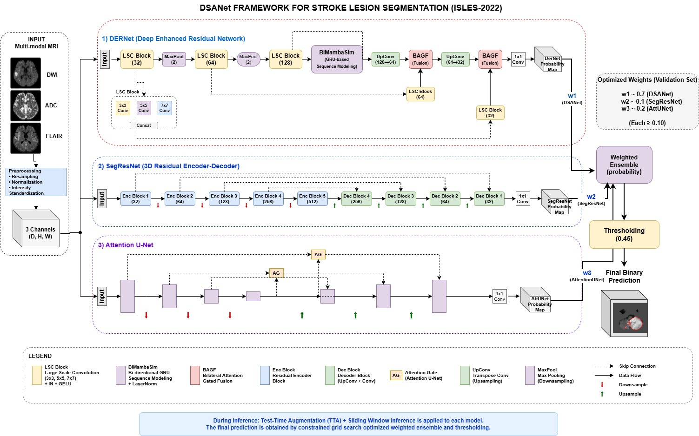
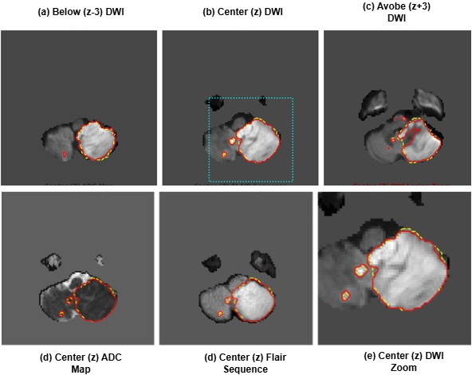
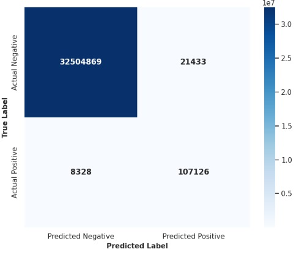

Input Preview


Representative standardized inputs used before ensemble inference.
A practical multi-model pipeline that balances segmentation quality, interpretability, and computational feasibility for constrained clinical environments.
Representative standardized inputs used before ensemble inference.
Macro Dice
0.0000
Micro F1
0.0000
Macro Recall
0.0000
Optimal Threshold
0.45

Overview of the proposed DSANet framework. Preprocessed multi-modal MRI volumes (FLAIR, DWI, ADC) are processed in parallel by three complementary 3D networks (DerNet, SegResNet, and Attention U-Net). Their soft predictions are fused through weighted averaging, where the weights and binarization threshold are jointly selected by the constrained grid search in Algorithm 1, followed by morphological post-processing.
Accurate segmentation of ischemic stroke lesions from multi- modal MRI is a critical prerequisite for timely clinical decision-making, yet most state-of-the-art methods rely on heavy architectures and high- end GPUs that are impractical in low-resource clinical settings. This pa- per presents DSANet, a heterogeneous ensemble framework that couples three complementary 3D architectures, a densely connected network, a residual segmentation network, and an attention-gated U-Net—through a principled grid-search optimization pipeline. Rather than fusing model outputs with uniform or heuristic weights, we formulate ensemble con- struction as a constrained search problem over both fusion weights and the binarization threshold, with optimal values selected on the valida- tion set via a Dice-driven objective. The pipeline further incorporates test-time augmentation on axis-flipped variants and morphological post- processing to suppress small disconnected false positives. Multi-modal information from FLAIR, DWI, and ADC sequences is integrated into a unified 3D input representation, and training is kept resource-efficient through automatic mixed precision, gradient accumulation, and cosine- annealed AdamW. Experiments on the ISLES 2022 dataset under a fixed 70/15/15 split show that DSANet attains a macro Dice Similarity Co- efficient of 0.8780, a micro F1-score of 0.8780, and a recall of 0.9279, outperforming each constituent network and a DynUNet baseline by a clear margin. A fine-grained subgroup analysis confirms stable perfor- mance across lesion sizes (0.7306 on small infarcts and 0.8860 on large lesions) and anatomical regions (0.9541 in deep brain structures). These results demonstrate that carefully optimized heterogeneous ensembles offer a practical path to accurate stroke segmentation under constrained computational budgets.

Multi-modal preprocessing, architecture-level specialization, and validation-optimized score-level fusion for final inference.
Algorithm 1 Constrained Grid Search for Heterogeneous 3D Ensemble
Require: Validation dataset D_val = {(X_i, Y_i)}^N_{i=1}, Model pool M = {M_der, M_seg, M_att}, Candidate thresholds T, Lower-bound mu = 0.1, Step size delta = 0.05
Ensure: Optimal ensemble weights w* and threshold t*
Phase 1: Soft TTA Probability Extraction
1: for all (X_i, Y_i) in D_val do
2: for all model M_k in M do
3: P_{k,i} <- ExtractSoftTTA(X_i, M_k) // Before thresholding
4: end for
5: end for
Phase 2: Constrained Grid Search
6: S_best <- 0
7: for w1 <- mu to 1.0 step delta do
8: for w2 <- mu to (1.0 - w1) step delta do
9: w3 <- 1.0 - (w1 + w2)
10: if w3 < mu then
11: continue
12: end if
13: for all t in T do
14: S_current <- 0
15: for all (X_i, Y_i) in D_val do
16: P_ens <- sum_{k=1..3}(w_k * P_{k,i})
17: Y_hat_i <- I(P_ens > t)
18: S_current <- S_current + Dice(Y_hat_i, Y_i)
19: end for
20: if (S_current / N) > S_best then
21: S_best <- (S_current / N)
22: w* <- [w1, w2, w3]
23: t* <- t
24: end if
25: end for
26: end for
27: end for
28: return w*, t*The paper defines weighted ensemble fusion as:
$$P_{final} = w_1 P_1 + w_2 P_2 + w_3 P_3, \quad w_1 + w_2 + w_3 = 1$$
The final binary prediction is obtained by thresholding:
$$\hat{Y} = \mathbb{1}[P_{final} \geq T], \quad T^* = 0.45$$
Training follows the combined objective reported in the paper:
$$L_{total} = \lambda_1 L_{Dice} + \lambda_2 L_{Focal}, \quad \lambda_1 = 1.0,\; \lambda_2 = 1.0,\; \gamma = 2.0$$
Test-time augmentation and morphological post-processing are applied after fusion to improve boundary consistency and suppress isolated false positives.
| Dataset Split | 70 / 15 / 15 |
|---|---|
| Patch Size | $64 \times 64 \times 64$ |
| Optimizer | AdamW + Cosine Annealing |
| AMP | Enabled |
| Threshold | 0.45 (validation optimized) |
| Weight Search | Constrained grid search (step 0.05) |
| Loss | $L_{total}=\lambda_1L_{Dice}+\lambda_2L_{Focal}$ |

Overview of the proposed network. The encoder–decoder backbone exchanges information through BAGF (Bidirectional Attention Gating Fusion) units that modulate both spatial and channel-wise feature flows instead of conventional skip connections. A BiMamba context module captures long-range contextual relationships, while the gated fusion suppresses irrelevant activations so that only lesion-discriminative features are propagated to the decoder, improving boundary localization and reducing false positives.
| Model | Val Dice | Test Dice |
|---|---|---|
| DERNet | 0.8215 | 0.8136 |
| SegResNet | 0.7801 | 0.7819 |
| Attn U-Net | 0.7789 | 0.7274 |
| DSANet | - | 0.8780 |
Grid-search optimized weighted fusion outperforms individual backbones.
| Sub-group | Dice Score |
|---|---|
| Small Lesions | 0.7306 |
| Large Lesions | 0.8860 |
| Deep Brain | 0.9541 |
| Superficial | 0.8037 |
| Lesion Core | 0.9909 |
| Boundary | 0.8350 |
| Metric (Macro) | Mean Score |
|---|---|
| Dice Coefficient | 0.8780 |
| IoU | 0.7826 |
| Precision (PPV) | 0.8333 |
| Recall (Sens.) | 0.9279 |

Qualitative slices across z-planes demonstrate stable lesion localization.


High true-positive concentration supports strong voxel-level overlap. Remaining errors are concentrated near hard boundary regions.

Boundary regions remain the most challenging, but fusion + TTA improve continuity and suppress isolated false positives.
@article{DSANet2026,
author = {Anonymized Authors},
title = {DSANet: A Grid-Search Optimized Heterogeneous Ensemble for Ischemic Stroke Lesion Segmentation in Low-Resource Settings},
journal = {Under Review},
year = {2026}
}